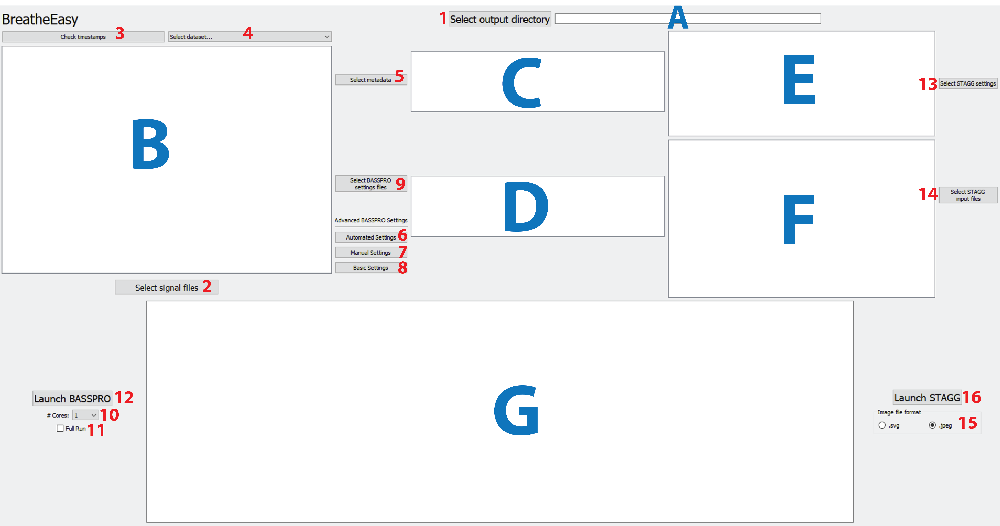
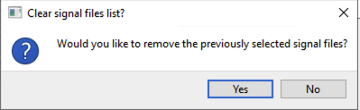

We recommend opening the below figure of the GUI as you go through the instructions. The labels
on this figure are used throughout the documentation to point you to the correct buttons and windows.

Figure 2 Screenshot of the main GUI screen with labels on buttons and windows.¶
Choose the folder where you would like your BASSPRO-STAGG output for the current session saved.
Click the Selectoutputdirectory button (1) to navigate through the File Finder display and select your desired folder.
The file path for your selected output folder will be displayed in window (A).
Choose the converted .txt signal files you would like analyzed.
Click the Selectsignalfiles button (2) and navigate through the file dialog to select the files you would like to analyze.
If you have signal files in more than one folder, simply follow the instructions iabove, then repeat.
A popup will appear that asks, “Would you like to remove the previously selected signal files?”.
Click “No” and this will keep your previously selected text files and add the new selection of text files.

Figure 3 Popup when selecting signal files from multiple folders.¶
A file path for each signal file you have selected for this run will be displayed in window (B). You can scroll up and down, if your
list is longer than the display screen, to verify all the files you want to analyze are present in the list before proceeding.
BASSPRO relies on a set of recognized timestamps (called comments in LabChart) to apply different
settings to different sections of the run. BASSPRO will not work if it does not recognize the
timestamps of the signal files provided as input. The user can check these timestamps via the GUI
by selecting the signal files they would like to review. In the drop-down menu (4), the user must
choose which type of experiment was run, thus selecting a set of timestamps to compare to those found
in the selected signal files. The options in this dropdown are default values based on the standards
of commenting in our lab. If your comments are different from our defaults, then you can create your
own reference file for this function. Click the Check timestamps button (3), when you have the
appropriate experiment type selected, to run the timestamp review. This process does take some
time to complete but will produce update comments in the main terminal window (G), so you know it is working.
The GUI will be unresponsive while checking timestamps. Once complete, a summary of the review is
printed to the main terminal window (G), as well as the path to the file where the full review results
are saved. Three main categories of mismatch are highlighted by the timestamp review, and these categories
are not mutually exclusive. As an example, take a signal file for a 5% Hypercapnia experiment with the following comments:
CAl20RoomAirCal205%CO2RoomAir5%CO2RoomAir
The series of timestamps recognized by BASSPRO for 5% Hypercapnia is as follows:
Cal20RoomAirCal205%CO2RoomAir5%CO2RoomAir2
This signal file will be included in 1) the list of files missing timestamps because it has
no Room Air 2; 2) the list of files with duplicate timestamps because it has two Room Air comments;
and 3) the list of files with novel timestamps because CAl 20 Room Air has a capital letter that should be lowercase.
There are different ways to handle each of these errors as outlined below.
Missing timestamps can be ignored as long as you do not want to include that period in your recording
or if you did not record that part of the experiment. For example, if you only record baseline room air
followed by an exposure to 5% CO2, then you will not have a “Room Air 2” section. This would be by design
as it is not included in your protocol, so this timestamp missing is not an issue. You will simply not
have data produced for this period. However, if the missing timestamp is a calibration period, then
you will not get refined variable calculation for that signal file.
All duplicate timestamps MUST be resolved and, currently, there is only one way to resolve them.
Open the designated file in LabChart, or your recording software of choice.
Delete or rename the comment that is not indicative of the desired period of the recording.
For example, if you accidentally entered two comments for calibration injections where the first set of calibration injections did not come out correctly, then you would delete the first comment for calibration and keep the second.
Save the corrected file.
Re-export the corrected file into a text format and save it over the previous version.
This will make the existing file path the same as the file path for the corrected text file.
There are two ways to handle novel timestamps. You should note, however, that while novel
timestamps are often flagged because of typos, some describe valid timepoints that simply
do not match the recognized defaults. Check your files with the results of the timestamp
check to determine which is your case.
2.1.3.1. Manually Change in Signal File and Re-export¶
Open the designated file in LabChart, or your recording software of choice.
Rename the comment that is with the typo.
Save the corrected file.
Re-export the corrected file into a text format and save it over the previous version.
This will make the existing file path the same as the file path for the corrected text file.